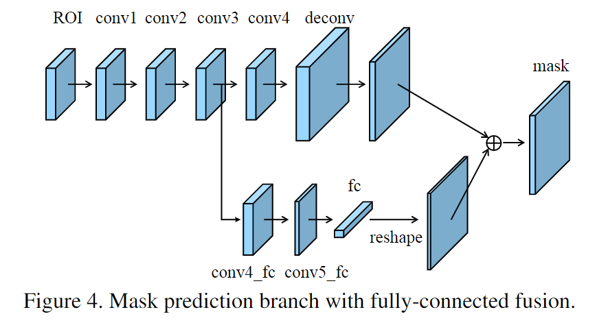

文章标题：Path Aggregation Network for Instance Segmentation
文章链接：https://arxiv.org/abs/1803.01534
发表时间：2018-03 (CVPR-2018)
Mask-RCNN的信息传播还不够充分。低层特征到高层特征的传递路径过长，FPN中每个proposal只负责金字塔特定的一层，掩码预测只基于单一视角。

对于上图来说，a的部分在原本FPN的后面添加一个自底向上的金字塔。上图表示自下而上的路径增强构建块。

金字塔上四个灰色区域对应的是同一个proposal，使用ROIAlign将特征转化为统一的尺寸，进行融合。

全连接层其实可由卷积实现，可看作感受野为整个特征图的卷积核，卷积出一个特征。通过全连接来加入全局的关系。